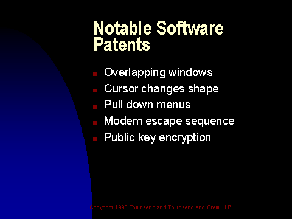

Slide 14 of 24
Notes:
Yes software inventions ARE patentable. The courts have overridden an old case that held algorithms in software were not patentable.
(Diamond v. Deere)
Here are some famous patented software techniques.